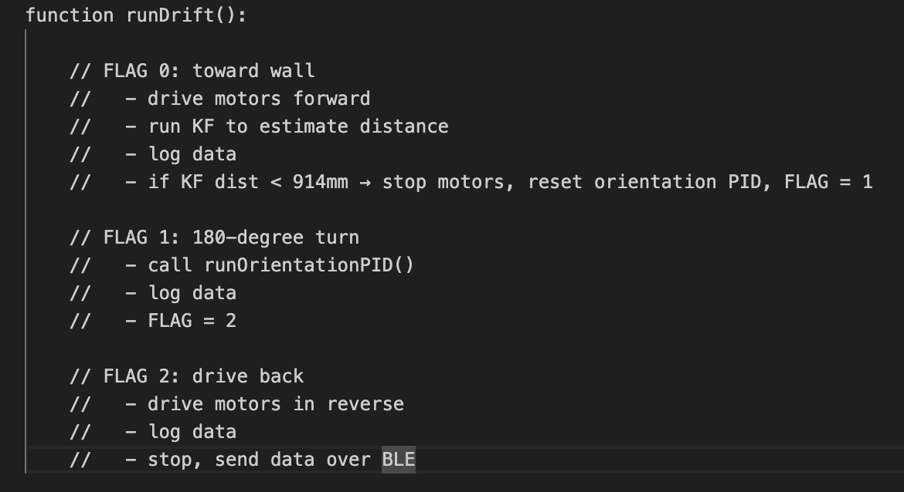
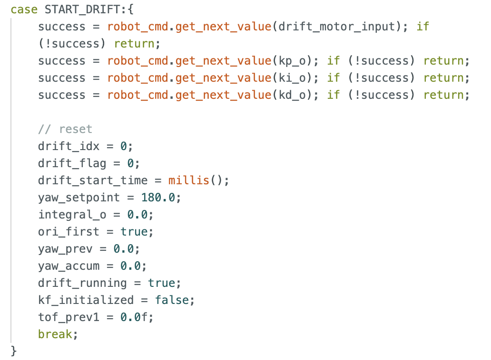
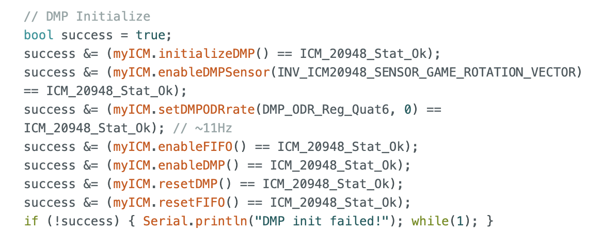
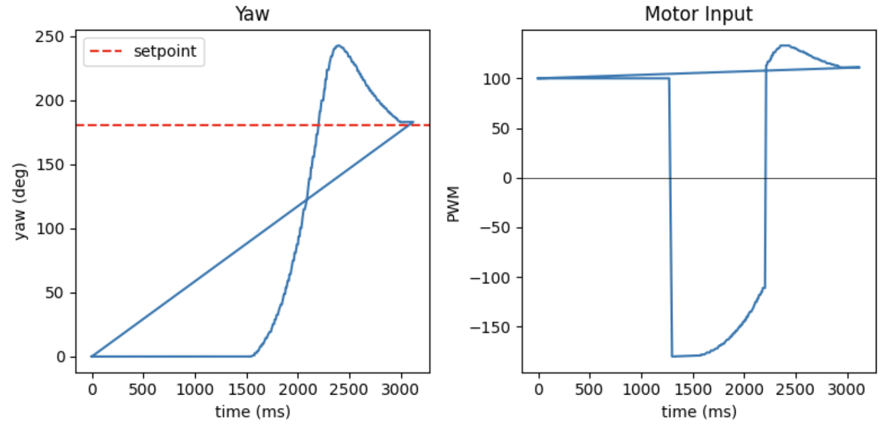
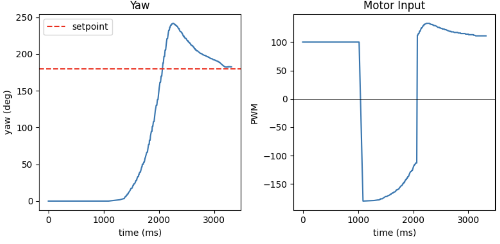
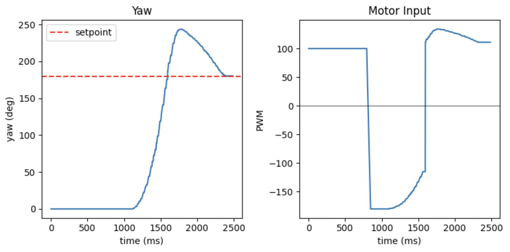

Lab 8: Stunts
Task B Drift
I selected "drifting" as the stunt I intended to execute. My approach centers on implementing the drift maneuver using the directional PID control developed in Lab 6. The overall workflow I envisioned is as follows: 1. The vehicle travels forward at a constant velocity—specifically, at the maximum possible speed. 2. Upon detecting a target distance via the Time-of-Flight (ToF) sensor, the directional PID control is engaged to execute a 180-degree rotation. 3. Once the 180-degree rotation is complete, the vehicle resumes its forward motion. I have utilized pseudocode to illustrate the transitions between the various states of this state machine.

Subsequently, I configured two commands to instruct the robot to execute a drift maneuver and transmit data to the computer. The following is the command I sent to the robot; it consists of four parameters in total: the first specifies the forward speed for the initial phase, while the remaining three serve as the PID parameters for controlling the turn.

Frustratingly, because I did not utilize the DMP in Lab 6 to address drift in the IMU sensor, the robot experienced significant errors during rotation; consequently, I added the DMP to resolve this issue.

Result
Below are the results of my three drift attempts. As you can see, despite starting from different distances, all three drifts were completed at a distance of exactly three tiles from the obstacle.



Statement
I got much help from Katherin Hsu's page.